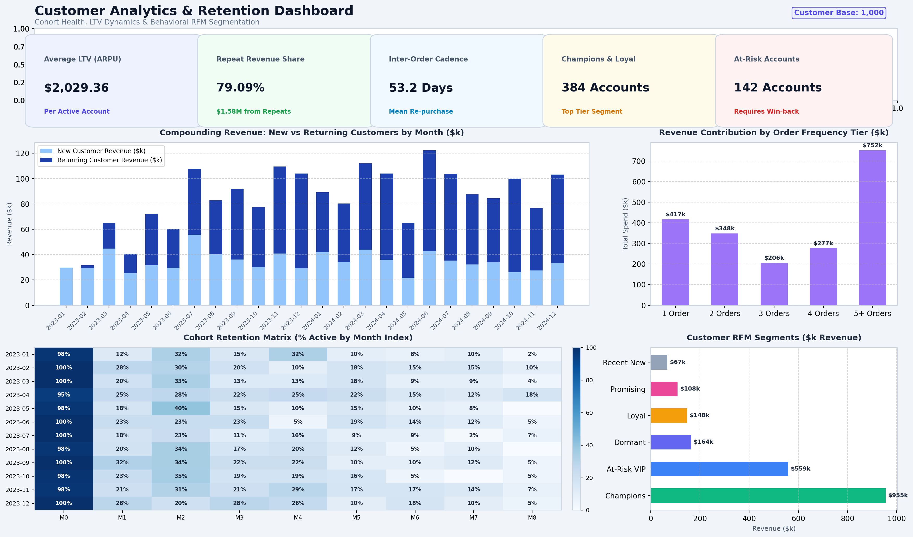
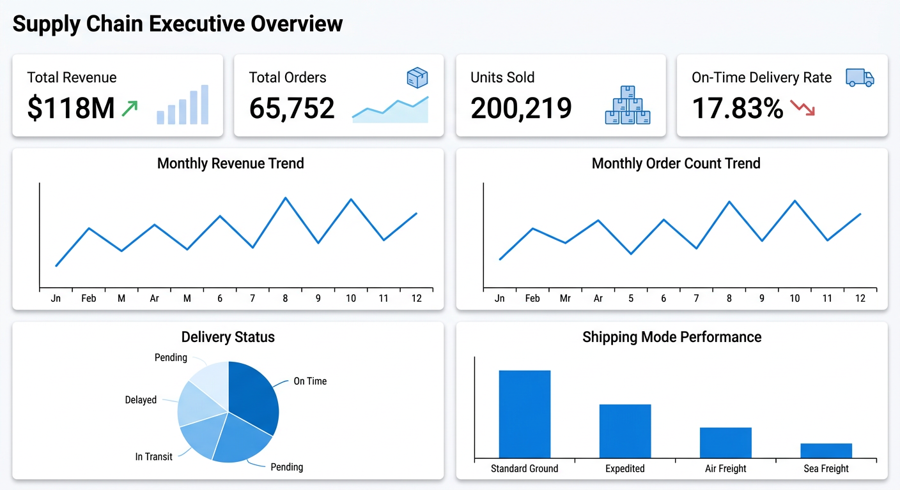
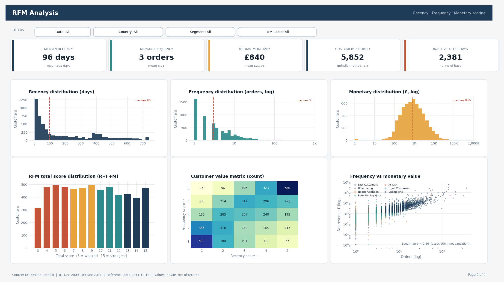
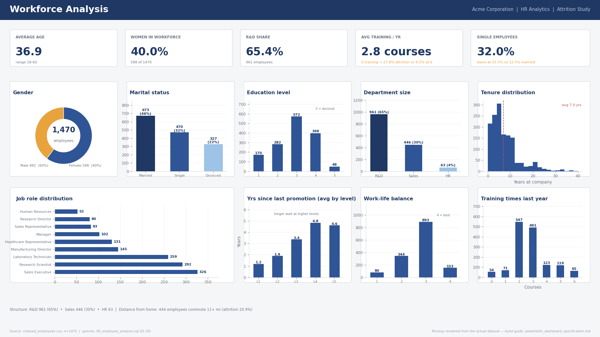
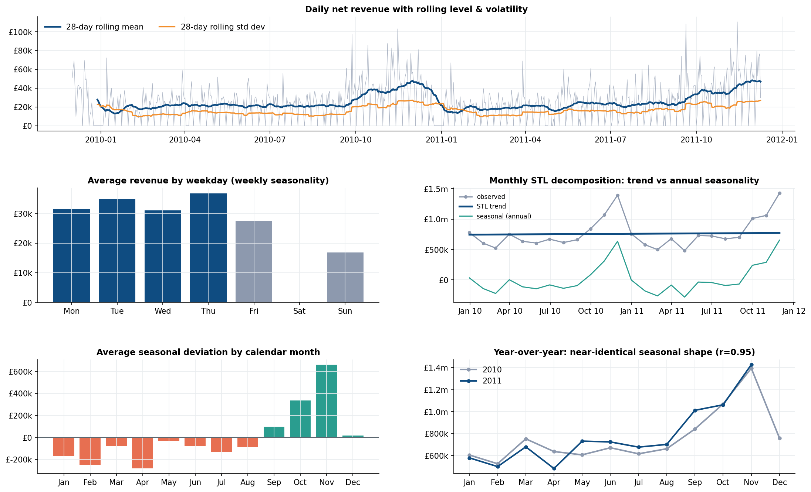
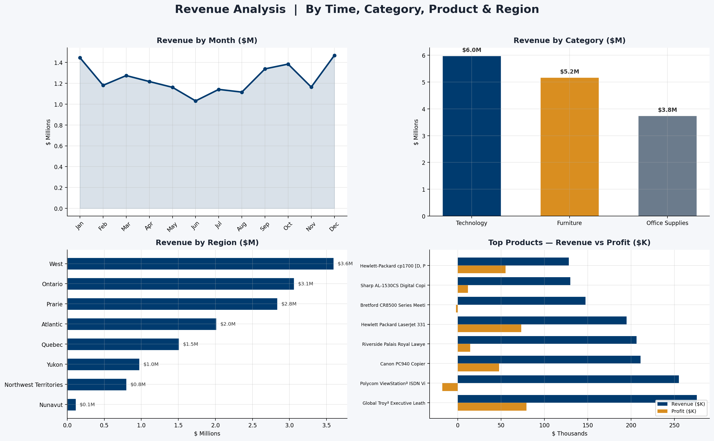

Data Analysis
Clean, transform, and explore business datasets to answer a defined question.
- Data cleaning & preparation
- Exploratory data analysis
- KPI definition & validation
Data Analyst · Business Intelligence
I turn business data into clear analysis, dashboards, and reporting.
Python · SQL · Power BI · Excel
I work end-to-end on data projects: cleaning raw datasets, writing analytical SQL, building Power BI dashboards, and explaining what the numbers mean in plain business language.
01 · About
I'm a data analyst focused on business analysis and business intelligence. I take a business question, work through the data behind it, and return an answer that is supported by analysis, validated calculations, and reporting someone can act on.
My working toolkit is Python (Pandas, NumPy, Matplotlib, Seaborn, statsmodels), SQL, Microsoft Excel, and Power BI. In practice that means cleaning and preparing data, exploratory analysis, writing analytical SQL, defining KPIs, and building dashboards and reports.
My degree background is in English Language and Culture, and I treat it as a supporting strength rather than my professional identity: it is why I document analysis carefully and explain findings clearly to non-technical readers. My portfolio holds six end-to-end projects spanning HR, customer, forecasting, SQL, financial, and supply-chain analytics.
02 · What I do
Three things I do in every project, from the first business question to the final report.
Clean, transform, and explore business datasets to answer a defined question.
Build Power BI dashboards and Excel reports that make performance visible.
Analyse commercial performance across sales, customers, finance, HR, and operations.
03 · Skills
The technologies and methods I use to collect, clean, analyse, and present data.
Python · Pandas · SQL · Excel · Power BI
04 · Projects
Six end-to-end analytics projects. Each one starts from a business question and ends with analysis, validation, and a dashboard or report. The three featured projects are the deepest technically; the remaining projects follow the same structure and cover additional business areas.
Strongest technical depth and clearest business value.

Financial performance requires a view of both revenue generation and the costs required to generate it. This project examines performance across revenue, expenses, profitability, and margins to support management reporting and decision-making.
Financial data covering revenue, expenses, and margin performance across business dimensions.
Gives management reporting one consistent view of revenue, cost, and margin together, so performance is judged on profitability rather than revenue alone.

Retail businesses need reliable sales forecasts for planning inventory, staffing, purchasing, and revenue expectations. This project analyses more than one million retail transaction records and builds a time-series forecasting workflow from historical sales patterns.
UCI Online Retail II — 1,033,036 cleaned transaction lines after preparation and exclusions.
Gives planning teams a defensible baseline forecast with a measured error level attached, so inventory, staffing, and purchasing decisions are made against a stated expectation rather than an assumption.

A UK-based online giftware retailer serves a mix of consumers and wholesale buyers. Management can see total revenue but not which customers generate it. The analysis segments customers by value and behaviour to support targeted marketing and retention decisions.
1.07 million transaction lines from a UK-based online giftware retailer, covering both consumer and wholesale buyers.
Shows where retention and marketing effort returns the most: a small group of customers carries the majority of revenue, and the segments to target first are named and measurable.
The same end-to-end workflow applied to HR, SQL, and operations.

HR management can see headcount and total turnover, but not which workforce factors are associated with employees leaving. This analysis investigates attrition and converts the findings into practical retention priorities.
IBM HR Analytics Employee Attrition & Performance — a public dataset of 1,470 employee records covering satisfaction, training, performance, income, and tenure, analysed as a fictional case-study company.
Gives HR a prioritised view of where attrition risk concentrates — satisfaction and training exposure — so retention effort can be targeted instead of applied as a blanket policy.

Business data often contains quality issues and requires more than simple aggregation to answer commercial questions. This project moves from raw relational data to validated business analysis using advanced SQL.
Relational business database covering customers, orders, order items, products, and regions, analysed through 10 documented SQL scripts — from data quality through to advanced analytics.
Demonstrates the database work employers test directly: analytical SQL that is readable, validated, and reusable — not just single-table aggregations.
sql/10_advanced_sql.sqlWITH customer_rfm_raw AS (
SELECT
c.customer_id,
(CAST('2024-12-31' AS DATE) - MAX(CAST(o.order_date AS DATE))) AS recency_days,
COUNT(DISTINCT o.order_id) AS frequency_orders,
SUM(oi.line_total) AS monetary_spend
FROM customers c
JOIN orders o ON c.customer_id = o.customer_id
JOIN order_items oi ON o.order_id = oi.order_id
WHERE o.order_status NOT IN ('Cancelled', 'Returned')
GROUP BY c.customer_id
),
scored_rfm AS (
SELECT
customer_id,
NTILE(4) OVER (ORDER BY recency_days DESC) AS r_tile,
NTILE(4) OVER (ORDER BY frequency_orders ASC) AS f_tile,
NTILE(4) OVER (ORDER BY monetary_spend ASC) AS m_tile
FROM customer_rfm_raw
)
SELECT * FROM scored_rfm;
Supply-chain teams need visibility into inventory, demand, logistics, and operational performance. This project applies business analytics techniques to identify patterns that support better inventory planning and operational decisions.
Operational supply-chain data covering inventory, demand, and logistics records.
Converts operational data into a repeatable dashboard specification that supports demand planning, inventory control, and logistics review.
05 · Experience
Professional activities across data analysis, teaching, and independent work.
Self-directed data-analysis work applying Python (Pandas, NumPy, Matplotlib), SQL, Excel, and Power BI to explore datasets, build dashboards, and communicate findings.
Teaching English language with a focus on clear communication, structured materials, and measurable learner progress.
Freelance and independent work combining data analysis, writing, and clear communication.
06 · Education
07 · Certifications
Courses, learning paths, and professional certificates from LinkedIn Learning, Microsoft, Udemy, and Astronomer.
08 · Contact
I'm open to data analyst and business intelligence roles. The fastest way to reach me is email — I usually reply within a day.